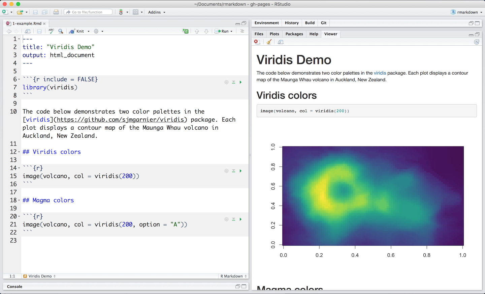

How It Works
This is an R Markdown file, a plain text file that has the extension .Rmd. You can open a copy here on RStudio Cloud.

Notice that the file contains three types of content:
- An (optional) YAML header surrounded by
---s - R code chunks surrounded by
```s - text mixed with simple text formatting
A Notebook Interface
When you open the file in the RStudio IDE, it becomes a notebook interface for R. You can run each code chunk by clicking the icon. RStudio executes the code and display the results inline with your file.

Rendering output
To generate a report from the file, run the render command:
library(rmarkdown)
render("1-example.Rmd")Better still, use the “Knit” button in the RStudio IDE to render the file and preview the output with a single click or keyboard shortcut (⇧⌘K).

R Markdown generates a new file that contains selected text, code, and results from the .Rmd file. The new file can be a finished web page, PDF, MS Word document, slide show, notebook, handout, book, dashboard, package vignette or other format.
How it works

When you run render, R Markdown feeds the .Rmd file to knitr, which executes all of the code chunks and creates a new markdown (.md) document which includes the code and its output.
The markdown file generated by knitr is then processed by pandoc which is responsible for creating the finished format.
This may sound complicated, but R Markdown makes it extremely simple by encapsulating all of the above processing into a single render function.